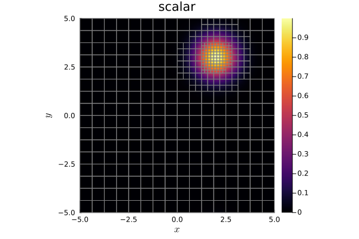

16: Adaptive mesh refinement


Adaptive mesh refinement (AMR) is a method of adapting the resolution of the numerical method to the solution features such as turbulent regions or shocks. In those critical regions of the domain, we want the simulation to use elements with smaller mesh sizes compared to other regions. This should be automatically and dynamically adapted during the run of the simulation.
Implementation in Trixi.jl
In Trixi.jl, AMR is possible for the mesh types TreeMesh and P4estMesh. Both meshes are organized in a tree structure and therefore, each element can be refined independently. In Trixi.jl, AMR is restricted to a 2:1 refinement ratio between neighbor elements. This means that the maximum resolution difference of neighboring elements is a factor of two.
The implementation of AMR is divided into different steps. The basic refinement setting contains an indicator and a controller. These are added to the simulation by using an AMR callback.
Indicators
An indicator estimates the current accuracy of the numerical approximation. It indicates which regions of the domain need finer or coarser resolutions. In Trixi.jl, you can use for instance IndicatorLöhner and IndicatorHennemannGassner.
IndicatorLöhner (also callable with IndicatorLoehner) is an interpretation and adaptation of a FEM indicator by Löhner (1987) and estimates a weighted second derivative of a specified variable locally.
amr_indicator = IndicatorLöhner(semi, variable=variable)All indicators have the parameter variable which is used to specify the variable for the indicator calculation. You can use for instance density, pressure or density_pressure for the compressible Euler equations. Moreover, you have the option to use simply the first conservation variable with first for any equations. This might be a good choice for a starting example.
IndicatorHennemannGassner, also used as a shock-capturing indicator, was developed by Hennemann et al. (2021) and is explained in detail in the tutorial about shock-capturing. It can be constructed as follows.
amr_indicator = IndicatorHennemannGassner(semi, alpha_max=0.5, alpha_min=0.001, alpha_smooth=true, variable=variable)Another indicator is the very basic IndicatorMax. It indicates the maximal value of a variable and is therefore mostly used for verification and testing. But it might be useful for the basic understanding of the implementation of indicators and AMR in Trixi.jl.
amr_indicator = IndicatorMax(semi, variable=variable)Controllers
The spatial discretization into elements is tree-based for both AMR supporting mesh types TreeMesh and P4estMesh. Thus, the higher the level in the tree the higher the level of refinement. For instance, a mesh element of level 3 has double resolution in each direction compared to another element with level 2.
To map specific indicator values to a desired level of refinement, Trixi.jl uses controllers. They are build in three levels: There is a base level of refinement base_level, which is the minimum allowed refinement level. Then, there is a medium level med_level, which corresponds to the initial level of refinement, for indicator values above the threshold med_threshold and equally, a maximal level max_level for values above max_threshold. This variant of controller is called ControllerThreeLevel in Trixi.jl.
amr_controller = ControllerThreeLevel(semi, amr_indicator; base_level=4, med_level=5, med_threshold=0.1, max_level=6, max_threshold=0.6)You can also set med_level=0 to use the current level as target, see the docstring of ControllerThreeLevel.
An extension is ControllerThreeLevelCombined, which uses two different indicators. The primary indicator works the same as the single indicator for ControllerThreeLevel. The second indicator with its own maximum threshold adds the property, that the target level is set to max_level additionally if this indicator's value is greater than max_threshold_secondary. This is for instance used to assure that a shock has always the maximum refinement level.
amr_controller = ControllerThreeLevelCombined(semi, indicator_primary, indicator_secondary; base_level=2, med_level=6, med_threshold=0.0003, max_level=8, max_threshold=0.003, max_threshold_secondary=0.3)This controller is for instance used in elixir_euler_astro_jet_amr.jl.
Callback
The AMR indicator and controller are added to the simulation through the callback AMRCallback. It contains a semidiscretization semi, the controller amr_controller and the parameters interval, adapt_initial_condition, and adapt_initial_condition_only_refine.
Adaptive mesh refinement will be performed every interval time steps. adapt_initial_condition indicates whether the initial condition already should be adapted before the first time step. And with adapt_initial_condition_only_refine=true the mesh is only refined at the beginning but not coarsened.
amr_callback = AMRCallback(semi, amr_controller, interval=5, adapt_initial_condition=true, adapt_initial_condition_only_refine=true)Exemplary simulation
Here, we want to implement a simple AMR simulation of the 2D linear advection equation for a Gaussian pulse.
using OrdinaryDiffEqLowStorageRKusing Trixiadvection_velocity = (0.2, -0.7)equations = LinearScalarAdvectionEquation2D(advection_velocity)initial_condition = initial_condition_gausssolver = DGSEM(polydeg = 3, surface_flux = flux_lax_friedrichs)coordinates_min = (-5.0, -5.0)coordinates_max = (5.0, 5.0)mesh = TreeMesh(coordinates_min, coordinates_max, initial_refinement_level = 4, periodicity = true)semi = SemidiscretizationHyperbolic(mesh, equations, initial_condition, solver; boundary_conditions = boundary_condition_periodic)tspan = (0.0, 10.0)ode = semidiscretize(semi, tspan);For the best understanding about indicators and controllers, we use the simple AMR indicator IndicatorMax. As described before, it returns the maximal value of the specified variable (here the only conserved variable). Therefore, regions with a high maximum are refined. This is not really useful numerical application, but a nice demonstration example.
amr_indicator = IndicatorMax(semi, variable = first)┌──────────────────────────────────────────────────────────────────────────────────────────────────┐
│ IndicatorMax │
│ ════════════ │
│ indicator variable: ………………………………………… first │
└──────────────────────────────────────────────────────────────────────────────────────────────────┘These values are transferred to a refinement level with the ControllerThreeLevel, such that every element with maximal value greater than 0.1 is refined once and elements with maximum above 0.6 are refined twice.
amr_controller = ControllerThreeLevel(semi, amr_indicator, base_level = 4, med_level = 5, med_threshold = 0.1, max_level = 6, max_threshold = 0.6)amr_callback = AMRCallback(semi, amr_controller, interval = 5, adapt_initial_condition = true, adapt_initial_condition_only_refine = true)stepsize_callback = StepsizeCallback(cfl = 0.9)callbacks = CallbackSet(amr_callback, stepsize_callback);Running the simulation.
sol = solve(ode, CarpenterKennedy2N54(williamson_condition = false); dt = 1, # solve needs some value here but it will be overwritten by the stepsize_callback ode_default_options()..., callback = callbacks);We plot the solution and add the refined mesh at the end of the simulation.
using Plotspd = PlotData2D(sol)plot(pd)plot!(getmesh(pd))
More examples
Trixi.jl provides many elixirs using AMR. We want to give some examples for different mesh types:
elixir_euler_blast_wave_amr.jlforTreeMeshandP4estMeshelixir_euler_kelvin_helmholtz_instability_amr.jlforTreeMeshelixir_euler_double_mach_amr.jlforP4estMesh
Animations of more interesting and complicated AMR simulations can be found below and on Trixi.jl's youtube channel "Trixi Framework".
First, we give a purely hyperbolic simulation of a Sedov blast wave with self-gravity. This simulation uses the mesh type TreeMesh as we did and the AMR indicator IndicatorHennemannGassner.
Source: Trixi.jl's YouTube channel Trixi Framework
The next example is a numerical simulation of an ideal MHD rotor on an unstructured AMR mesh. The used mesh type is a P4estMesh.
Source: Trixi.jl's YouTube channel Trixi Framework
For more information, please have a look at the respective links.
Package versions
These results were obtained using the following versions.
using InteractiveUtilsversioninfo()using PkgPkg.status(["Trixi", "OrdinaryDiffEqLowStorageRK", "Plots"], mode = PKGMODE_MANIFEST)Julia Version 1.10.12
Commit d93beab124c (2026-08-15 10:29 UTC)
Build Info:
Official https://julialang.org/ release
Platform Info:
OS: Linux (x86_64-linux-gnu)
CPU: 4 × AMD EPYC 7763 64-Core Processor
WORD_SIZE: 64
LIBM: libopenlibm
LLVM: libLLVM-15.0.7 (ORCJIT, znver3)
Threads: 1 default, 0 interactive, 1 GC (on 4 virtual cores)
Environment:
JULIA_PKG_SERVER_REGISTRY_PREFERENCE = eager
Status `~/work/Trixi.jl/Trixi.jl/docs/Manifest.toml`
[b0944070] OrdinaryDiffEqLowStorageRK v3.4.0
[91a5bcdd] Plots v1.41.7
[a7f1ee26] Trixi v0.17.7-DEV `~/work/Trixi.jl/Trixi.jl`This page was generated using Literate.jl.